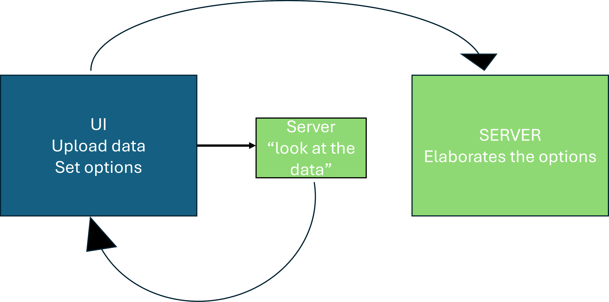
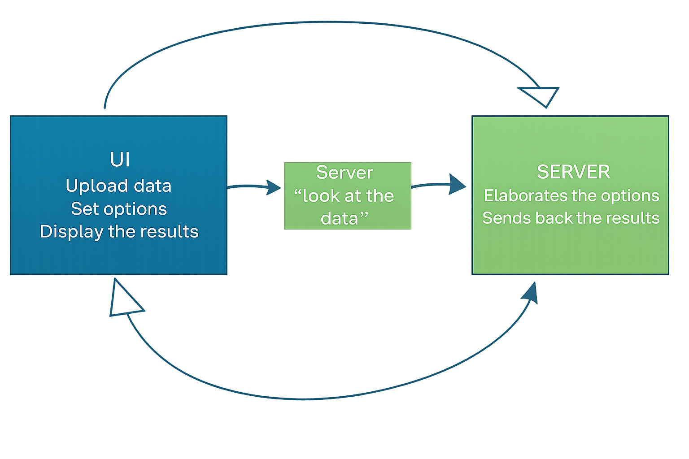

People want to use the app for their own data – the code needs to be as fluid as possible and to allow the users to upload their data
To be flexible enough to allow for the customization of the settings based on the characteristics of the dataset
The UI and the server need to communicate differently


ui = fluidPage(
sidebarLayout(
sidebarPanel(
fileInput("file", "", accept = c("csv")),
radioButtons("sep",
"Choose column separator",
c(";" = ";", "," = ",")),
actionButton("load", "Upload data"),
uiOutput("x_ui"),
uiOutput("y_ui"),
actionButton("analyze", "Analyze data")
),
mainPanel(
plotOutput("graph"),
verbatimTextOutput("summary")
)
)
)server <- function(input, output, session){
dataInput <- eventReactive(input$load, {
read.csv(input$file$datapath, sep = input$sep)
})
vars <- reactive({
names(dataInput())
})
output$x_ui <- renderUI({
selectInput(
"x",
"X variable:",
choices = vars(),
selected = vars()[1]
)
})
output$y_ui <- renderUI({
selectInput(
"y",
"Y variable:",
choices = vars(),
selected = vars()[min(2, length(vars()))]
)
})
newdata <- eventReactive(input$analyze, {
df <- dataInput()
df[, c(input$x, input$y), drop = FALSE]
})
output$graph <- renderPlot({
df <- newdata()
x <- df[[1]]
y <- df[[2]]
if (is.factor(x) || is.character(x)) {
boxplot(y ~ x,
xlab = "Group",
ylab = "Value")
} else {
plot(x, y)
}
})
output$summary <- renderPrint({
df <- newdata()
summary(df)
})
}